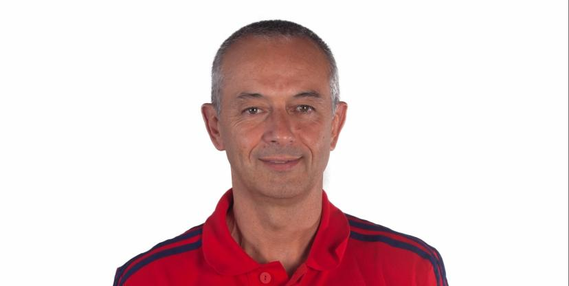

Mon Parcours
Je suis pas venu à la prépa mentale par passion du développement personnel. J'y suis arrivé parce que la vie m'y a amené, les coups durs, les remises en question, et les leçons qu'on apprend quand on n'a plus le choix. Chaque étape m'a construit. C'est ce parcours que je mets aujourd'hui au service de ceux que j'accompagne.
RUGBY & POLICE — LA DISCIPLINE ET L'ENGAGEMENTTenir sous pression
Sur le terrain et dans la police, j'ai appris ce que ça veut dire de tenir. Des situations difficiles, de la pression, des réalités dures. Ça forge. La discipline et le sens du collectif, pour moi c'est pas des valeurs qu'on affiche, c'est des choses qu'on vit.
L'ACCIDENT — RÉSILIENCE ET IDENTITÉQui suis-je sans ça ?
Trois opérations, des séquelles à vie, plus de rugby. D'un coup tu te retrouves face à toi-même et tu te demandes qui tu es sans ça. Ce travail sur mon identité, accepter que je suis pas qu'un rugbyman, c'est le tournant de tout.
AIRBUS & L'ENTRAÎNEMENT — TRANSMISSIONLe mental fait toujours la différence
Consultant chez Airbus, entraîneur de cadets et juniors nationaux pendant quatre ans. Deux univers différents, une même certitude : ce qui fait la différence c'est toujours le mental.
L'ENSEIGNEMENT SUPÉRIEUR — AU QUOTIDIEN AVEC LES ÉTUDIANTSJe vis leur réalité
Six ans à accompagner des centaines d'étudiants dans leurs projets, leurs galères, leur recherche d'alternance. Coordinateur national aujourd'hui. Je vis leur réalité tous les jours. Et ça change tout dans ma façon de les coacher.
REPRENDRE LES ÉTUDES À 26 ANS — HUMILITÉ ET MÉTHODERecommencer de zéro
Être le vieux de la promo, recommencer de zéro, réapprendre à apprendre. J'ai dû bosser ma concentration, changer mes méthodes. C'est dur. Et c'est exactement pour ça que je comprends ce que vivent mes étudiants.
Ma philosophie
Mon rôle :
Mieux se connaître pour mieux performer.
Apprendre à se réguler dans l'action.
Être pleinement présent dans les moments clés.
Retrouver du plaisir pour libérer la performance.

FORMATION SPÉCIALISÉE
Olivier Leprêtre & Christian Ramos
Formé auprès d'Olivier Leprêtre, préparateur mental du Stade Toulousain, puis avec Christian Ramos, l'un des PM les plus reconnus du rugby français.